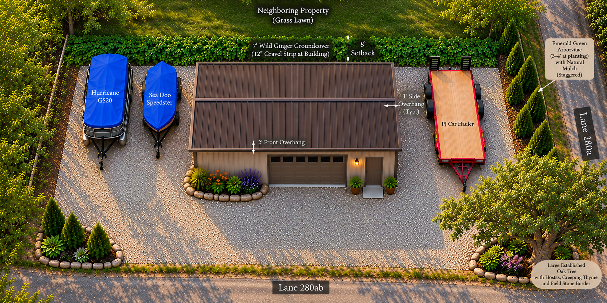
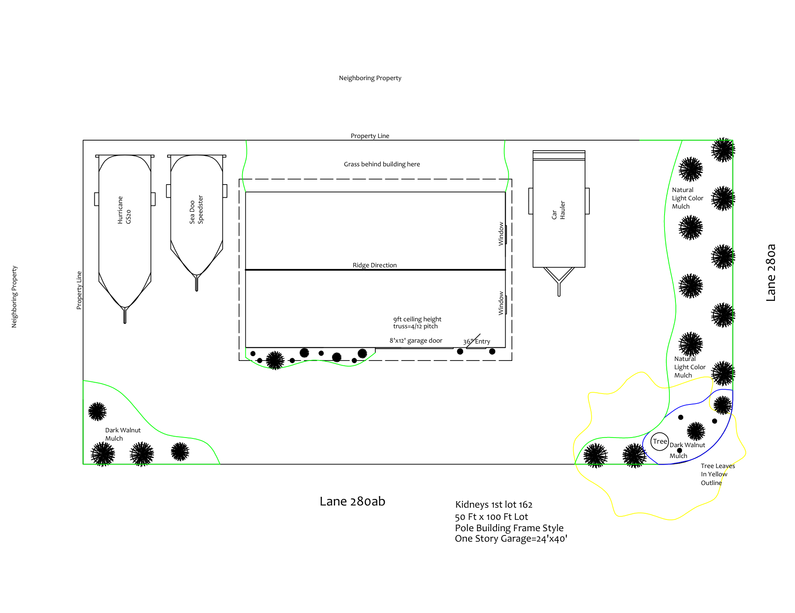

Welcome to Colby's Cozy Corner!


Thank you for taking a moment to learn about my plans for improving this property.
I have owned this parcel since 2005, and my intention is to transform it into an attractive, organized, and practical space for storing and maintaining my personal belongings.
This project represents more than simply constructing a garage. It is an opportunity to improve the property's appearance, introduce thoughtful landscaping, provide natural privacy screening, and create a functional space that complements the surrounding neighborhood.
I understand that changes to a property can raise questions about what the finished result might look like. That is one reason I have created this webpage.
Rather than leaving others to wonder about my intentions, I would like to share my vision openly through photographs, drawings, and descriptions of the proposed improvements.
My hope is that anyone interested in this project will gain a better understanding of what I intend to accomplish.
1. The Proposed Garage
The property measures approximately 50 feet by 100 feet.
My plan is to construct a 24-foot by 40-foot garage with 9-foot-high walls.
The proposed exterior will feature:
• Neutral, earth-toned vertical metal siding.
• Bronze-colored metal roofing, or an architectural shingle-of a weathered wood color plan.
• Complementary mocha-toned overhead and service doors.
• Two windows on one end of the building towards lane 280a.
• Roof overhangs that complement the structure's appearance and provide additional weather protection.
The interior will provide space for a small woodworking shop, an area for automotive and metalworking projects, and organized storage for tools, equipment, and other personal belongings.
The purpose of this building is personal storage, maintenance, and hobby use—not the creation of a commercial business or public lake-access facility.
2. Organized Outdoor Storage
In addition to the garage, I intend to maintain designated outdoor parking spaces for several items I own.
These include my Hurricane GS20 deck boat, Sea-Doo Speedster, and PJ car-hauler trailer.
Each will have an established parking location, with gravel surfaces where appropriate.
During the summer, the boats are generally in the water, leaving their trailers stored on the property.
During the winter, the boats will be returned to their trailers and protected with fitted covers and additional blue shrink-wrap coverings.
The parking arrangement is intended to keep these belongings organized, provide convenient access when needed, and minimize their visibility from the surrounding travel lanes.
3. Landscaping and Natural Privacy
Landscaping is an important part of this improvement project.
My intention is to create a natural, attractive environment that fits into the area properties tastefully.
Emerald Green Arborvitae
Emerald Green arborvitae will be planted in designated areas along Lane 280a and near the corner of Lane 280ab.
The trees will be arranged in a staggered pattern to create natural privacy screening as they mature.
This arrangement is also intended to preserve reasonable visibility near the intersection.
Existing Corner Tree
The large, established tree near the property corner will remain a prominent feature of the landscape.
Its surrounding planting area will incorporate natural colored mulch, hostas, flowering plants, and other complementary vegetation.
Natural Fieldstone Borders
Selected planting beds will be bordered with naturally occurring fieldstones collected from my properties.
Garage-Front Landscaping
A small planting bed along the garage front will incorporate ornamental grasses, flowering plants of various types.
Dark walnut colored mulch will provide a complementary background for the plants.
Groundcover and Maintenance
The area behind the garage will incorporate low-growing groundcover, with a narrow gravel separation beside the building to help keep vegetation away from its exterior.
The remaining landscape will incorporate natural recycled mulch, darker decorative mulch, gravel, and selected vegetation.
The overall objective is simple:
An attractive property that is functional, naturally landscaped, and reasonably easy to maintain.
4. Understanding the Drawings and Renderings
Important Notice About the Images
The architectural and landscape renderings displayed on this webpage were created with the assistance of artificial intelligence.
They are intended to provide a realistic visual representation of the proposed building, equipment storage, and landscaping.
These images are conceptual illustrations—not photographs of completed construction or guarantees of the exact finished appearance.
Actual landscaping will naturally differ from the illustrations.
Plants grow at different rates, flowering periods vary, seasons change, and natural materials such as fieldstones and mulch do not produce the uniform appearance sometimes depicted in computer-generated images.
The finished property is intended to follow the general arrangement and appearance illustrated, but it should not be expected to reproduce the artificial perfection of a digital rendering.
About the AutoCAD Drawing
The original property layout was created by me using AutoCAD.
Unlike the AI-generated illustrations, this drawing was developed using proportional measurements to represent the intended placement of the garage, equipment storage areas, and landscaping.
The goal of sharing these images is to provide a clear understanding of the proposed improvements.
Private Property, Individual Rights & Responsible Land Use
5. Why Property Ownership Matters
Private property ownership is an important part of individual liberty and personal independence.
The ability to acquire land, maintain it, improve it, and use it for lawful personal purposes is fundamental to the security and independence of individuals and families.
The United States Constitution recognizes important protections for private property, including due process and limitations on governmental takings.
I also recognize that local governments establish land-use regulations intended to address legitimate concerns such as safety, drainage, access, and neighboring property impacts.
However, I believe these regulations must be reasonable, fairly administered, and capable of accounting for individual circumstances.
A regulation should not be considered beyond question simply because it has been adopted into a county ordinance.
Laws and regulations can be challenged, reconsidered, amended, or invalidated through established legal processes when appropriate.
I believe property owners have every right to question whether a particular restriction serves a legitimate public purpose or unnecessarily interferes with reasonable use of privately owned land.
6. Understanding My Particular Circumstances
Living in a lake community creates property ownership challenges that are not always present in other residential settings.
Many lakefront parcels are relatively narrow or limited in available building space.
Not every property owner has the opportunity to purchase enough land immediately adjoining their residence to accommodate garages, workshops, boats, trailers, and other personal belongings.
Sometimes the only practical solution is to purchase an additional parcel elsewhere in the neighborhood.
That parcel might be next door, across the street, or several blocks away.
In my situation, I already have lake access through other property interests.
I own lakefront property and reside on another property with lake access.
This additional parcel is not intended to create lake access for myself or anyone else.
Its purpose is to provide space for a garage and the organized storage to protect my personal property investments.
I believe that distinction deserves consideration when evaluating the proposed use.
7. My Concerns Regarding the Distance Restriction
One particular land-use restriction affecting my plans concerns the permitted distance between an accessory building and its associated residence.
I question whether a uniform distance requirement is appropriate for every property ownership situation, especially within established lake communities.
Consider two situations.
In the first, a property owner purchases a parcel that already contains a lawful, established storage building and uses that building for personal storage.
In the second, a property owner purchases a similar vacant parcel and wishes to construct a comparable building for the same purpose.
Although the intended uses may be nearly identical, the applicable regulations can produce very different outcomes.
I believe this raises a legitimate question of fairness.
Why should the ability to maintain a personal storage building depend so heavily on whether the structure existed before the current owner acquired the property?
I recognize that existing structures may have different legal classifications, including lawful nonconforming status, and that these distinctions can affect what is permitted.
Nevertheless, I believe the practical similarities between these situations warrant serious consideration when evaluating whether the regulations should be revised.
8. Property Ownership Since 2005
I purchased this property in 2005.
My understanding is that the distance restriction affecting my proposed garage was adopted between 2010-2012 years after I acquired the land for my intentions of future needs stated. From 2007 to 2024, I owned a small business that allowed me the room to store much of my items I now need room for in this proposed garage, along with storing my truck. Storing indoors allows my investment to be protected from weather deterioration and nesting issues from chipmunks that are prevalent in our area. I have not been capable of using our residential garage space for vehicle storage since closing my business in 2024 which has led to both vehicles I personally own damaged by chipmunks.
I do not recall receiving an individual notification explaining that such a restriction had been established or that it could affect my future plans for the property.
I recognize that the absence of personal notification does not, by itself, establish that an ordinance was improperly adopted.
However, I believe changes that significantly affect potential property uses deserve transparency, meaningful public participation, and careful consideration of existing owners' circumstances.
Property owners make long-term decisions when purchasing land.
Those decisions often involve expectations about future improvements, storage needs, and how their properties may serve their families.
I believe those expectations deserve reasonable consideration when regulations change.
9. A Call for Fair and Reasonable Regulations
My concerns extend beyond my own property.
I believe other property owners may encounter similar circumstances when attempting to construct personal storage buildings on separately owned parcels.
I would like to see Steuben County reconsider restrictions that rely heavily on the distance between a residence and an accessory building.
Rather, I believe that property ownership, individual circumstances, and reasonable personal use deserve greater consideration than a blanket distance restriction may provide.
I 100% support amending or removal of this 300 ft variance rule, so that property owners in comparable circumstances have a fair opportunity to improve and utilize their land.
My position is that regulations should serve people and communities—not impose unnecessary obstacles without sufficient justification.
10. My Commitment to This Property
The proposed garage will provide valuable storage and workspace.
The landscaping will introduce natural screening, flowering plants, decorative stonework, and improvements to the property's overall appearance.
Thank you for taking the time to learn about my plans.
Colby's Cozy Corner
Private Property